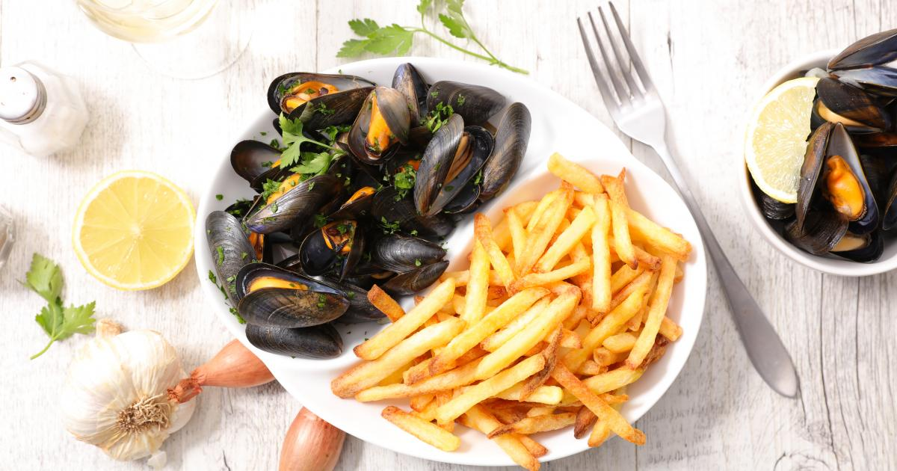

Mussels in White Wine with Fries 🇧🇪

Mussels in White Wine with Fries (French: Moules-frites or moules et frites) is a main dish of mussels and French fries originating in Belgium.
The title of the dish is French, moules meaning mussels and frites fries, with the Dutch name for the dish meaning the same. It is considered the national dish of Belgium.
Ingredients (for 8 servings):
Spicy Mayonnaise
- ¼ cup (60 ml) mayonnaise
- 1 tsp (5 ml) harissa
Fries
- 1 lb (450 g) russet potatoes, peeled and julienned on a mandoline
- Vegetable oil, for frying
Mussels in White Wine
- 2 shallots, finely chopped
- 1 garlic clove, finely chopped
- 2 tbsp butter
- ½ cup (125 ml) white wine
- 2 lb (900 g) mussels, trimmed and washed
- 2 tbsp flat-leaf parsley, finely chopped
Steps:
-
Preheat the oil in a deep fryer to 350°F (180°C). Line a baking sheet with paper towels.
Preheat the oven to 200°F (95°C).
-
For the spicy mayonnaise, in a small bowl, combine all of the ingredients.
Refrigerate until ready to serve.
-
For the fries, in another bowl, rinse the potatoes under cold water until the water runs clear.
Drain and pat dry with a clean dishcloth.
-
Fry half of the potatoes at a time in the oil for 2 minutes or until lightly golden and crispy. Watch out for splattering.
Drain well on the paper towel. Season with salt. Keep warm in the oven.
-
For the mussels, In a large pot over medium heat, soften the shallots and garlic in 1 tbsp of the butter.
Add the white wine and let reduce for 1 minute. Add the mussels.
Cover and simmer until the mussels have opened, about 4 to 5 minutes.
-
Discard any mussels that have not opened.
Using a slotted spoon, remove the mussels and transfer to a serving dish. Keep warm.
-
Reduce the cooking juices for 2 minutes. Add the parsley and remaining butter. Season with pepper.
Pour over the mussels. Serve the mussels with the fries and spicy mayonnaise. Enjoy!